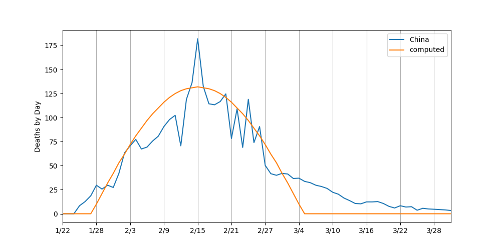
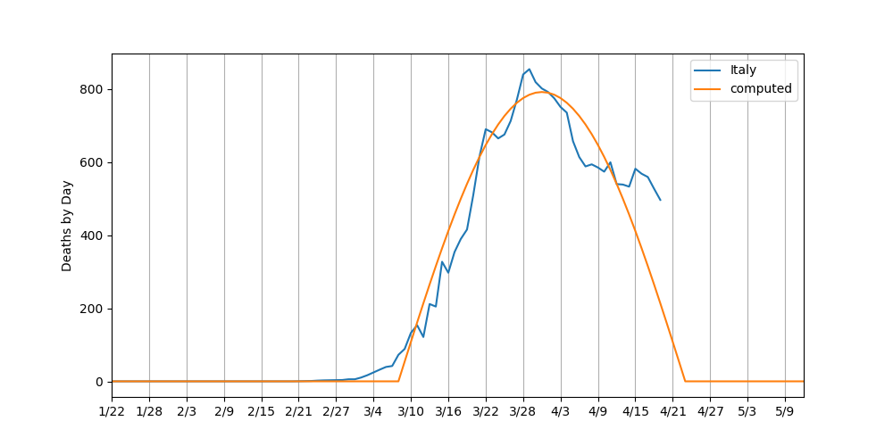

Covid-19 Predictions
by William R. Speirs
Data Through March 31st
Disclaimer: Everything on this page is a prediction. I make no claims to the accuracy of the information.
This is an attempt to predict the rise and fall of deaths from the covid-19 virus. I focus on deaths because it is the most accurate indicator/data we have on this virus. In an attempt to predict the rise and fall of deaths, I first looked at China as it is the only country (South Korea has seen multiple rises and falls) that has seen a rise and fall in deaths. There have been accusations of inaccurate data from China, but in my opinion, it is the best data we have at the moment. All code used to create these predications can be found on GitHub. I used the following assumptions in my predictions:
Assumptions:
- Reported deaths are not prefect; therefore, I use a 3-day moving average to smooth out these numbers a bit. Why 3 days instead of some other number? I played around with the data and model, and a 3-day moving average was a nice balance between smoothing the data while not vastly distorting the original values.
- The WHO reports it takes 2 to 8 weeks to die from covid-19. The Lancet report states that the mean duration from symptom onset to death is 17.8 days (16.9 to 19.2 95% credible interval). The "Hell is Coming" report used 23 - 24 days, and had a fairly accurate prediction of 800 deaths in the US on March 26th (it was actually 1,275). For my predictions I've used 24 days between when a country issues a lock-down, and the peak of deaths in that country.
- It has been reported in numerous places that the morality rates of the virus vary greatly by age and preexisting conditions. I'm treating everyone in a country the same, and people across countries the same as well.
- "Lock-down" dates are not perfect. Lots of people do not follow the orders, and the order that is issued makes a large difference as well. Instead of trying to be too precise, I simply pick a single date and assume the peak will come 24 days later.
- Being "out-of-the-woods" as I call it, is highly subjective. I'm shooting for a date when people feel safe to interact with others in public. This is very much an emotional and subjective date, so any model will be inaccurate.
China
I attempt to model when a country is "out-of-the-woods" by trying to fit half a sine wave to the number of deaths by day. Why a sine wave and not another function? I tried a few, and the sine wave fit pretty nicely to the number of deaths by day in China. Also, half a sine wave naturally fits what you would expect to see: a rise in deaths-by-day, followed by a fall in deaths-by-day as sheltering-in-place begins to work. Using this methodology, my model predicts that China "will be" out-of-the-woods on March 6th with a total of 3,180 deaths. As of March 6th China had reported 3,044 deaths, a difference of 136. While only a single country, this seems to validate the use of half a sine wave to predict the rise and fall of deaths for the virus. The data with the fitted curve for China can be seen below: 
Italy
Italy has received a lot of attention because of the rapid increase in deaths in the country. Italy issued a lock-down of their country on March 8th. Using this date and the deaths reported, my model predicts Italy will be "out-of-the-woods" on April 23rd with 22,485 deaths. As of March 31st they have reported 12,428 deaths. The curve for Italy is shown below: 
United States
The last country I modeled is my own, the United States. The US issued lock-down orders at
various times
on a state-by-state basis. I picked March 24th as it seemed to be around when most of the country issued the order.
My model predicts the US will be "out-of-the-woods" on May 14th with a total of 32,601 deaths. As of March 31st the US
has reported 3,073 deaths. The curve for the US is shown below: